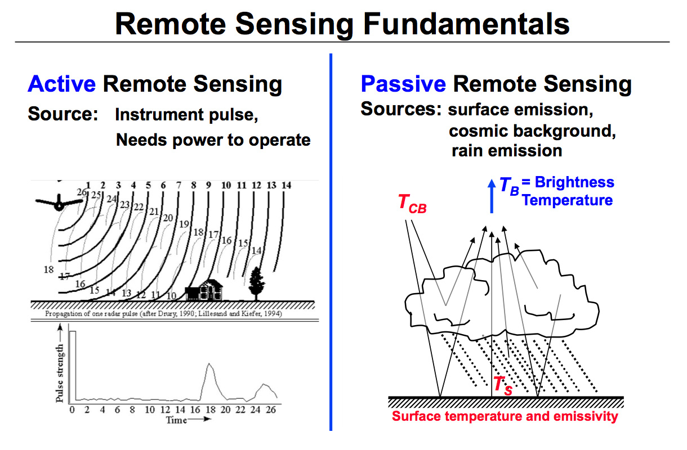
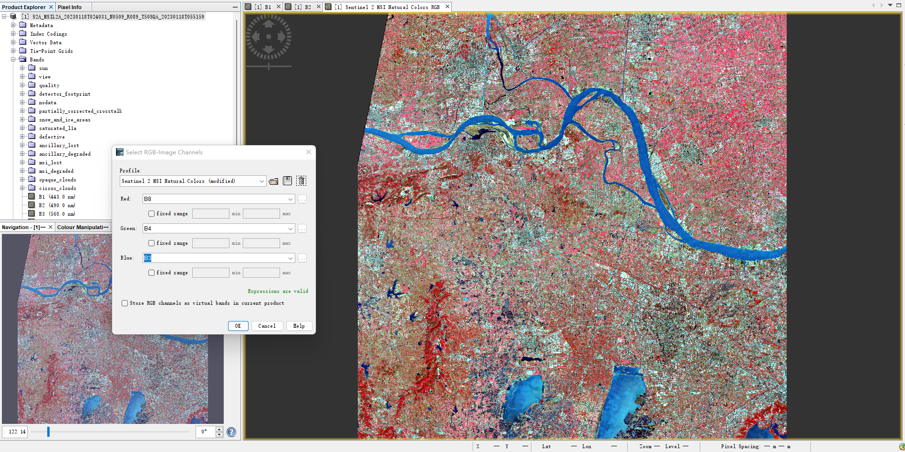
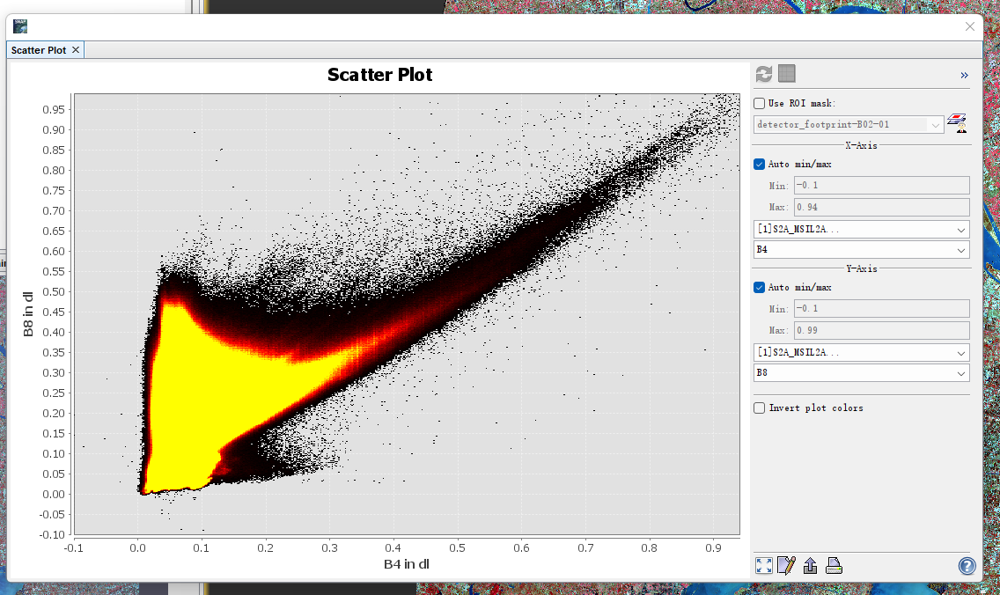
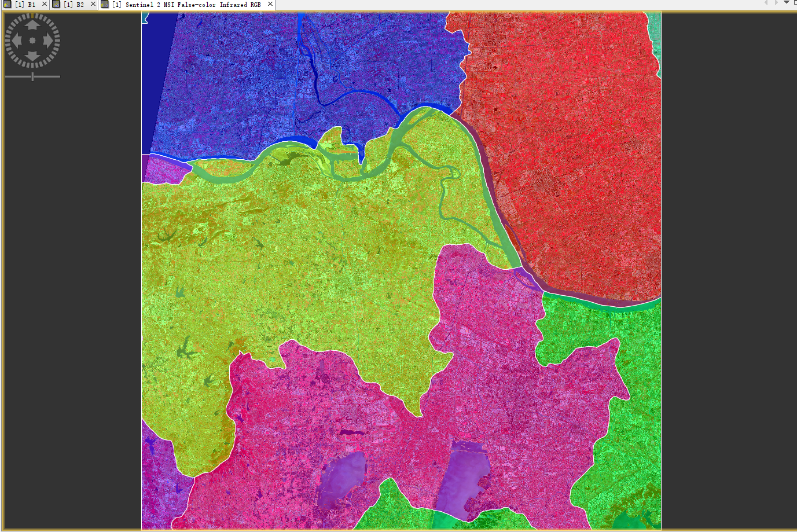
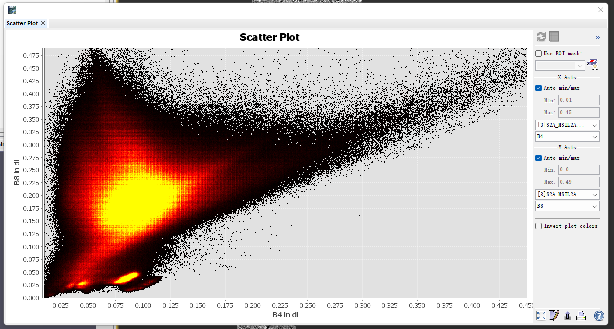

2 Week1: Getting started with remote sensing
2.1 Summary
2.1.1 The concept of remote sensing
In contrast to in situ or on-site observation, remote sensing is the process of gathering data about a phenomenon or object without actually coming into touch with it. The phrase is used particularly in reference to learning more about Earth and other planets.
The phrase “remote sensing” today typically refers to the detection and classification of Earthly objects using satellite- or aircraft-based sensor technologies. Based on transmitted signals, it encompasses the atmosphere, the surface, and the oceans (e.g. electromagnetic radiation). It can be divided into “active” and “passive” remote sensing (where a signal is emitted to the object by a satellite or aircraft and its reflection is detected by the sensor) (when the reflection of sunlight is detected by the sensor)

2.1.2 Piece of work:
In the first chapter, I learned how to access remote sensing data using two open source databases, Landsat and Copernicus Open Access Hub, their existence make it easy for me to access remote sensing data from anywhere in the world.
Secondly, I learned how to use QGIS, SNAP and some packages in R for simple raster processing calculations. I used my own case and followed the instructions step by step, learning a lot about the terminology, gaining some knowledge about remote sensing and statistics and also having some questions.
2.2 Application
2.2.1 QGIS
When learning QGIS, I used as an example a map of Zhenjiang and Changzhou, two cities in Jiangsu Province, China, bordered by the Yangtze River to the north, from Copernicus Open Access Hub. Then, merged the B2 (blue), B3 (green), B4 (red) and B8 (NIR) in R10m with multiband colour, and knew the details in different enhancement options. Then, I learned about difference between R10m and R20m. Generally, upsampling is used to complement the situation when the pixel resolution is greater than the source resolution, and a common interpolation method is nearest neighbour, while downsampling is used when pixel resolution is smaller than source resolution. Here is the mechanism of nearest neighbour:
\(X_{src}=X_{dst}*\frac{Width_{src}}{Width_{dst}}\)
\(Y_{src}=Y_{dst}*\frac{Height_{src}}{Height_{dst}}\)
If the calculation results in a fractional number, then either remove the decimal part or round up to get the same value as the original dotted pixel. This method is very simple but inaccurate, the zoomed in image has a very bad mosaic and the zoomed out image has a very bad distortion. The problem lies in the treatment of the fractional part, which is equivalent to the process of colour gradation and cannot be fully equated with the existing colour of pixel. It is possible to use bilinear interpolation, considering the four values around the point that needs to be scaled, to see which value has more influence on it, and to give it more weight, I saw the option of bilinear interpolation then tried it. In addition, cubic has more accurate result because non-linear function can fit better but more complex.
2.2.2 SNAP
The sRBG standard colour space can be used for display, network transmission and to convert colour levels on other devices into a colour space that is recognisable to the computer by means of the sRGB conversion function. This is why the brightness levels in the range [0,4095] on the Sentinel-2 can be converted to values in the range [0,255].
When using SNAP, 432 nm means this wavelength is 432 nm, it is a coastal aerosol wave which wavelength is lessmthan blue wave. I like the colour composition function, which allows me to highlight different sections depending on my needs.

Here is the scatter plot of my example:

It can be seen that map of Zhenjiang and Changzhou has high brightness level, which means it is a city area, and it also shows a lot of wet bare soil, we can assume that these wet soils may be more suitable for cultivation, the overall biomass is not very large and, most notably, there is also a lot of dry bare soil lack of vegetation cover, presumably non-agricultural land.
When using mask function, I got the administrative divisions of these municipalities because I downloaded the administrative divisions of China from GADM data:

(yellow: Zhenjiang, pink:Changzhou, red: Taizhou, green:Wuxi, blue: Yangzhou)
After resampling and downscaling the data I got this tasselled plot, compared to the previous one I found that the downscaling had reduced the urban part, so the plot was significantly less bright, and there was more wet bare soil present than the previous one.

Generally speaking, I prefer using SNAP than QGIS because it has more vivid chart and we can evaluate the local soil conditions, the size of the city and the biomass.
2.2.3 R script
When learning the code to deal with data from Landsat and Sentinel, I found a final paired t-test is performed to test whether the actual means of the urban land type from Landsat and Sentinel are equal, the degree of freedom from the results is 5970, p-value is much smaller than 0.05, which means the actual means of two groups are quite different, and at the same time, this calculation also shows the estimate mean of two samples. There are 95% probability that the true mean is between -9300.307 and -9198.368. data from Sentinel and Landsat is different.
2.3 Reflection
Remote sensing technology is now widely used in scientific research and practice, for land planning, geological exploration and forest fire prevention, so learning to make remote sensing maps is an essential skill.
There are several areas of interest to me, one of them is how PCA can be used to reduce the dimensionality of data, particularly in image processing, and I will be doing further study and figuring this out. Then, I would like to know if the image data from satellite remote sensing can be used in AI, as there are already mature deep learning algorithms with a high accuracy rate for image recognition, how to use these images to achieve functions such as automatic recognition and automatic monitoring.